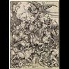

<!DOCTYPE html>
<html lang="en">
 <head>
<!-- Favicon -->
<link rel="shortcut icon" href="../../favicon.ico">
  <meta charset="utf-8"/>
  <title>
   Where Is Satan Now?
  </title>
  <meta content="Post on /v/Conspiracy from 2018-01-03 by JesusRules." name="description"/>
  <meta content="Where Is Satan Now?" property="og:title"/>
  <meta content="Post on /v/Conspiracy from 2018-01-03 by JesusRules." property="og:description"/>
  <link href="../../static/css/page.css" rel="stylesheet"/>
  <meta content="https://voat.conspiracy.hackliberty.org/thumbnails/14/88/14885f0f-dab9-4d81-b113-16492b89d562.jpg" property="og:image"/>
  <meta content="https://voat.conspiracy.hackliberty.org/v/conspiracy/2320388.html" property="og:url"/>
  <meta content="width=device-width, initial-scale=1" name="viewport"/>
  <link href="https://voat.conspiracy.hackliberty.org/v/conspiracy/2320388.html" rel="canonical"/>
  <meta content="article" property="og:type"/>
  <meta content="Voat /v/Conspiracy Archive" property="og:site_name"/>
  <meta content="en_US" property="og:locale"/>
  <meta content="summary_large_image" name="twitter:card"/>
  <meta content="Where Is Satan Now?" name="twitter:title"/>
  <meta content="Post on /v/Conspiracy from 2018-01-03 by JesusRules." name="twitter:description"/>
  <meta content="https://voat.conspiracy.hackliberty.org/thumbnails/14/88/14885f0f-dab9-4d81-b113-16492b89d562.jpg" name="twitter:image"/>
 </head>
</html>
<body class="dark">
 <header>
  <nav class="navbar navbar-dark bg-primary">
    <a class="navbar-brand" href="../../index.html">/v/Conspiracy Archive</a>
    <div class="navbar-collapse">
      <ul class="navbar-nav">
        <li class="nav-item">
          <a class="nav-link" href="../../date/page-1.html">Date</a>
        </li>
        <li class="nav-item">
          <a class="nav-link" href="../../comments/page-1.html">Comments</a>
        </li>
        <li class="nav-item">
          <a class="nav-link" href="../../search.html">Search</a>
        </li>
        <li class="nav-item dropdown">
          <a class="nav-link dropdown-toggle" href="#" id="navbarDropdown" role="button" 
             data-toggle="dropdown" aria-haspopup="true" aria-expanded="false">
            subreddits
          </a>
          <div class="dropdown-menu" aria-labelledby="navbarDropdown">
            <a class="dropdown-item" href="https://reddit.conspiracy.hackliberty.org">r/conspiracy</a>
            <a class="dropdown-item" href="https://reddit.pizzagate.hackliberty.org">r/pizzagate</a>
            <a class="dropdown-item" href="https://voat.conspiracy.hackliberty.org">v/conspiracy</a>
            <a class="dropdown-item" href="https://voat.pizzagate.hackliberty.org">v/pizzagate</a>
          </div>
        </li>
      </ul>
    </div>
  </nav>
</header>

 <div id="container">
  <!-- array (
  'submissionid' => 2320388,
  'creationDate' => '2018-01-03 18:10:23',
  'domain' => 'biblicisminstitute.wordpress.com',
  'formattedContent' => NULL,
  'isAdult' => 0,
  'isAnonymized' => 0,
  'subverse' => 'Conspiracy',
  'thumbnail' => '14885f0f-dab9-4d81-b113-16492b89d562.jpg',
  'title' => 'Where Is Satan Now?',
  'url' => 'https://biblicisminstitute.wordpress.com/2015/10/27/where-is-satan-now/',
  'userName' => 'JesusRules',
  'archivedLink' => NULL,
  'archivedDomain' => NULL,
  'isDeleted' => 0,
) --><div class="content" role="main">
   <div class="sitetable linklisting" id="siteTable">
    <div class="submission id-2320388 link type-text" id="submission-2320388">
     <a name="submissionTop">
     </a>
     <p class="parent">
     </p>
     <a class="thumbnail may-blank" href="https://biblicisminstitute.wordpress.com/2015/10/27/where-is-satan-now/" target="_self">
      
     </a>
     <div class="entry unvoted">
      <p class="title">
       <a class="title may-blank" href="https://biblicisminstitute.wordpress.com/2015/10/27/where-is-satan-now/" tabindex="1" target="_self" title="Where Is Satan Now?">
        Where Is Satan Now?
       </a>
       <span class="domain">
        (
        <a href="https://archive.searchvoat.co/search.php?d=biblicisminstitute.wordpress.com">
         biblicisminstitute.wordpress.com
        </a>
        )
       </span>
      </p>
      <p class="tagline">
       submitted
       <time datetime="2018-01-03T18:10:23+00:00" title="01/03/2018 6:10:23 PM">
        2018-01-03T18:10
       </time>
       by
       <span class="userattrs">
        <a class="author may-blank" href="https://archive.searchvoat.co/search.php?u=JesusRules">
         JesusRules
        </a>
       </span>
      </p>
      <ul class="flat-list buttons">
       <li class="first">
        <a class="comments may-blank" href="https://archive.searchvoat.co/v/Conspiracy/2320388" rel="nofollow">
         2 comments
        </a>
       </li>
      </ul>
     </div>
     <div class="child">
     </div>
     <div class="clearleft">
     </div>
    </div>
    <div class="clearleft">
    </div>
   </div>
   <div class="horizontal-line">
   </div>
   <div class="commentarea">
    <div class="sitetable nestedlisting" id="siteTable">
     <div class="child id-11530617 comment even" style="">
      <div class="entry unvoted">
       <div class="noncollapsed" id="11530617" style=";">
        <p class="tagline">
         <a class="author may-blank" href="https://archive.searchvoat.co/search.php?u=jesus_is_lord">
          jesus_is_lord
         </a>
         <span class="userattrs">
         </span>
         <time datetime="2018-01-04T15:59:23+00:00" title="1/4/2018 3:59:23 PM">
          2018-01-04T15:59
         </time>
        </p>
        <div class="usertext-body may-blank-within" id="commentContent-11530617">
         <div class="md">
          <p>
           <p>
            And when the thousand years are expired, Satan shall be loosed out of his prison,
           </p>
          </p>
         </div>
        </div>
        <ul class="flat-list buttons">
         <li class="first">
          <a class="bylink" href="https://archive.searchvoat.co/v/Conspiracy/2320388/11530617" rel="nofollow">
           link
          </a>
         </li>
        </ul>
       </div>
      </div>
     </div>
     <div class="child id-11529196 comment even" style="">
      <div class="entry unvoted">
       <div class="noncollapsed" id="11529196" style=";">
        <p class="tagline">
         <a class="author may-blank" href="https://archive.searchvoat.co/search.php?u=B3bomber">
          B3bomber
         </a>
         <span class="userattrs">
         </span>
         <time datetime="2018-01-04T12:14:49+00:00" title="1/4/2018 12:14:49 PM">
          2018-01-04T12:14
         </time>
        </p>
        <div class="usertext-body may-blank-within" id="commentContent-11529196">
         <div class="md">
          <p>
           <p>
            To whom it may concern:
           </p>
           <p>
            If these stories really are based in reality, do remember history is written by the victors. I find the part where Lucifer was an angel before he "rebelled" and that all depictions of him are of some misshapen animistic human hybrid when the stories concerning such events often told of humans not knowing the difference between which side they were talking to since they looked the same (the few that survived being removed from other variants of The Bible I might add, history by the victors) to be absolutely HILARIOUS.
           </p>
           <p>
            Think of the scifi Star Wars stories. Now tell me how many people actually can tell the difference between a Sith and a Jedi. This gets especially fun when a few days before, they were training together before the pupil decided to try and kill the master.
           </p>
          </p>
         </div>
        </div>
        <ul class="flat-list buttons">
         <li class="first">
          <a class="bylink" href="https://archive.searchvoat.co/v/Conspiracy/2320388/11529196" rel="nofollow">
           link
          </a>
         </li>
        </ul>
       </div>
      </div>
     </div>
    </div>
   </div>
  </div>
 </div>
<!-- Footer Section -->
<footer class="container-fluid mt-3">
  <p class="small mb-0">
    /v/conspiracy archive has 42504 posts and 159856 total comments.
    <a href="https://git.hackliberty.org/c0mmando/voat-conspiracy-archive/">source code</a>.
  </p>
</footer>

<script src="../../static/js/jquery-3.7.1.slim.min.js"></script>
<script src="../../static/js/comments-toggle.js"></script>

</body>
